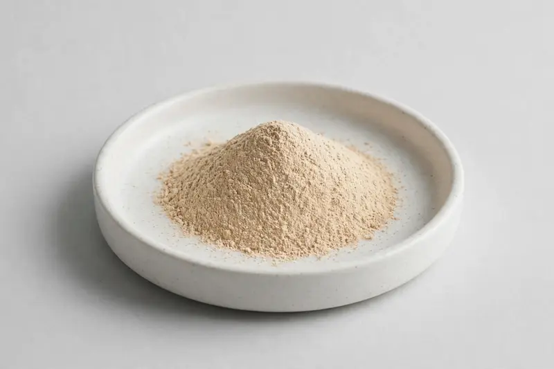

Fruit-derived longan extract powder for beverage and functional-food development, supplied to your target spec.

Overview
Longan extract is a water-soluble botanical powder derived from the fruit of Dimocarpus longan, typically standardised around polysaccharide or total-phenol content. Demand from overseas beverage and functional-food brands has grown as formulators look for Asian fruit actives with clean flavour profiles. As a Xi'an-based trading company we source through partner producers and confirm feasibility once your target specification is received.
Specifications below reflect commonly requested options in the market — not a stock list. Share your target spec and we'll confirm exactly what we can supply, honestly.
| Specification | Details |
|---|---|
| Botanical identity | Longan fruit extract powder |
| Marker compound | Commonly requested spec grades: polysaccharide and total-phenol concentrations; actual specs confirmed on inquiry |
| Appearance | Fine powder, color typical of the extract |
| Mesh size | Typically 80–100 mesh (confirm per inquiry) |
| Testing | COA/TDS arranged on request; scope agreed per your spec |
Applications
Documentation
We don't claim in-house labs or certifications we don't hold. COA and TDS documents can be arranged on request, and testing scope is agreed against your specification before supply.
FAQ
Related products
Withania somnifera
Key marker: Withanolides
View specs →Rhodiola rosea
Key marker: Rosavins & Salidroside
View specs →Silybum marianum
Key marker: Silymarin
View specs →Opuntia ficus-indica
Key marker: Betalain Content
View specs →Phoenix dactylifera
Key marker: Polyphenol Content
View specs →Send your target spec and volumes — we'll respond with a tailored quotation.
Request a Quote